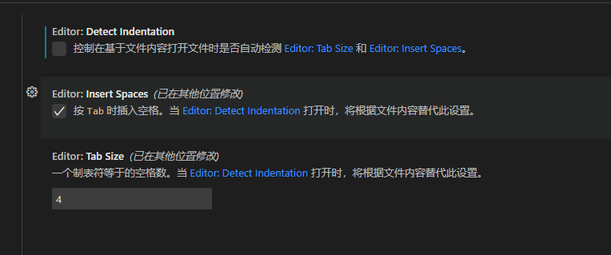

VS_Code
笔记，视频课程链接: https://www.bilibili.com/video/BV1J34y1x715/?p=4&spm_id_from=pageDriver&vd_source=6e2679413ced05411ecc1a59c5240896 已看完: p1,p2,p3,p4,p5,p6,p7, 待看: p8,p9
VS_Code使用教程
1. 什么是IDE?
- IDE(Integrated Development Environment)是含代码编辑器、关键词高亮、智能感应、智能纠错、格式美化、版本管理等功能于一身的
高级代码编辑器 - 每个工程师都要有自己顺手的IDE，它是我们的武器
- 要理解无论使用什么IDE编写出来的代码，本质上都是
白底黑字的，都是纯文本的
2 Visual Studio Code简介
- Visual Studio Code简称VS Code，是由微软公司开发的一个轻量且强大的代码编辑器，支持
Windows，OS X和Linux。内置JavaScript、TypeScript和Node.js支持，而且拥有丰富的插件生态系统，可通过安装插件来支持C/C++、C#、Python、PHP等其他语言。
3 VS Code的下载与安装
官方网站: https://code.visualstudio.com
4 VS Code教程推荐
- 按照指引安装
-
Visual Studio Code官方文档 https://code.visualstudio.com/docs
-
Visual Studio Code教程 https://www.php.cn/tool/vscode/
5 用户、工作区、文件夹的概念
6 settings.json配置文件(用户、工作区、文件夹)
- 用户
路径:
C:\Users\(username)\AppData\Roaming\Code\User\settings.json - 工作区
路径: workspace下的
workspace.code-workspace文件 - 文件夹
路径: 包含文件夹下的
settings.json
7. 汉化插件
Chinese(Simplified)(简体中文)Language Pack for Visual Studio Code
7. 颜色主题设置
步骤: 文件 -> 首选项 -> 颜色主题，选择合适的颜色主题
- 推荐浅色主题: Quiet Light
- 推荐深色主题: 深色+ （默认深色）
8. 文件图标主题
步骤: 文件 -> 首选项 -> 文件图标主题
当前使用：
- 推荐文件图标主题: Material Icon Theme
插件： - open in browser - 快捷方式 Ctrl + Shift + p - 热更新插件 Live Server - Auto Rename Tag 自动修改标签对名称 - carbon-now-sh 将代码生成一张图片 在实际开发中遇到技术问题或者做部分代码片段分享，可以使用该插件将代码生成一张图片 - prettier 格式化代码 - 格式化美化代码 Prettier-Code formatter -
9. 前进和后退快捷键
后退：Alt + <-
前进：Alt + ->
10. 显示符号列表（宏定义、变量、函数）
大纲
11.代码跳转插件
C/C++C/C++ Extension PackBetter C++ Syntax-
C++ Intellisense??? https://blog.csdn.net/qq1263575666/article/details/90524021 -
安装
C/C++完成之后，打开你的包含c++的文件夹，将会生成一个.vscode文件夹，所有的配置将在这个文件夹中进行配置 - 扩展程序会根据当前系统环境配置基本信息，因此有可能配置不完整，这时需要通过生成
c_cpp_properties.json文件来配置缺少的信息 - 如果要构建应用程序，则需要生成
tasks.json文件 - 要启用调试，需要生成
launcher.json文件
12. 高亮显示插件
highlight-words参考链接 https://zhuanlan.zhihu.com/p/113017073
高亮显示的配置文件(settings.json) - 单色效果
"highlightwords.colors": [
{"dark": "yellow" }
],
"highlightwords.box": {
"light": true,
"dark": false
},
效果展示：
 - 多色效果
- 多色效果
"highlightwords.colors": [
{"dark": "yellow" },
{"dark": "Cyan" },
{"dark": "Pink" },
{"dark": "LightGreen" },
{"dark": "LightSteelBlue" },
{"dark": "Plum" }
],
"highlightwords.box": {
"light": true,
"dark": false
},
效果展示：

词语高亮匹配方式:
// 匹配方式
// 0 - 默认(部分匹配)
// 1 - 全词匹配
// 2 - 忽略大小写
// 3 - 全词匹配 + 忽略大小写
"highlightwords.defaultMode": 1,
13. 空格和Tab转换
Tab转为空格 Editor: Detect Indentation 取消勾选 Editor: Insert Spaces 勾选 Editor: Tab Size 4 
settings.json
// 打开文件时，是否自动检测
"editor.detectIndentation": false,
// 插入Tab时，是否转换为空格
"editor.insertSpaces": true,
// 一个tab对应的空格数
"editor.tabSize": 4,
14. Makefile的插件
- Makefile Tools
15. 画图插件
- Draw.io Integration
16. VIM插件
VimVim emulation for Visual Studio Code